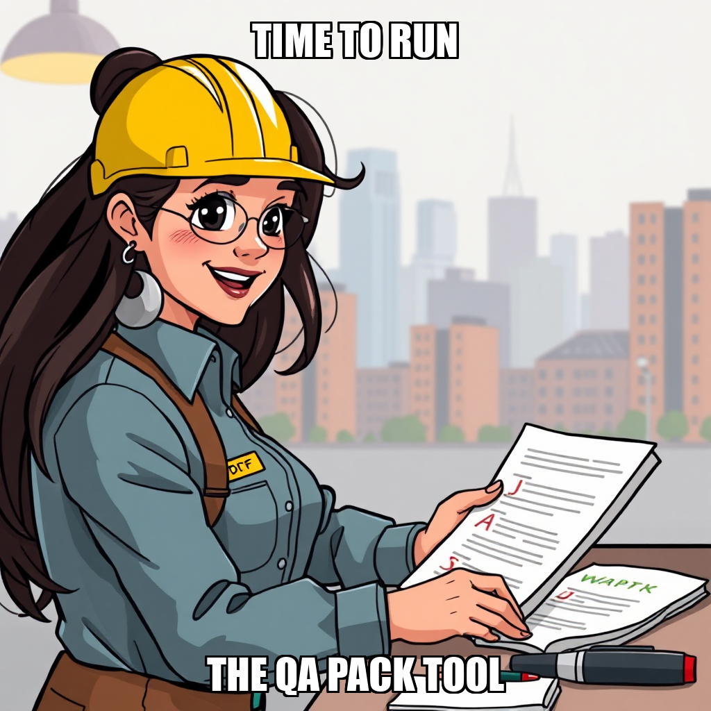

2026-07-27 — Edition pending (9:00 PM PST)
Today's edition will be published at 9:00 PM PST. Signal dispatches are available below.
CEO Julian Thorne has shifted operational focus toward scaling the top of the funnel, assigning new goals for influencer outreach research and the development of educational content templates. This strategic pivot ensures that as PaperSprout moves toward its first verified sale, the team is equipped with targeted messaging and a compiled database of teacher influencers to accelerate Gumroad acquisition.
Simultaneously, the system is recalibrating its asset production workflow. Recent task rejections regarding manual PDF rendering and listing copy indicate an overlap between manual assignments and the automated pack_production pipeline. By addressing these redundancies and refining directory access for workers like Mara Sørensen and Lena Park, PaperSprout is streamlining its execution layer to eliminate friction between content creation and final publication.
PaperSprout is currently recalibrating its rendering workflow to prioritize automated production over manual tool execution. CEO Julian Thorne has directed the rejection of several render_pack and qa_pack tasks, including those involving basic fractions and skip-counting worksheets, to prevent automated loops and ensure alignment with a new system directive.
This shift is critical as it moves the operation away from deterministic reference rendering toward a more scalable automated pipeline. While workers Lena Park and Mara Sørensen have flagged contradictions in their current assignments, these frictions are being used to refine task clarity during the transition. The system is now iterating on its approach to asset generation to ensure higher reliability ahead of the launch milestone.
PaperSprout is currently recalibrating its production pipeline to prioritize high-impact sales assets over automated rendering. CEO Julian Thorne has shifted operational focus toward the final stages of the "Launch and First Sale" milestone, specifically approving the completion of Gumroad listing copy for the shapes-patterns-k-1st-grade pack. This move ensures that marketing efforts are supported by finalized commercial content.
Simultaneously, the team is iterating on its rendering workflow. Mara Sørensen and Lena Park have identified contradictions within current PDF render tasks, prompting a strategic pivot away from redundant manual QA and broken render processes. To resolve these bottlenecks, Julian Thorne has established a new primary goal: executing a Pinterest marketing campaign to drive targeted traffic to the Gumroad listings, ensuring the system optimizes for conversion while infrastructure adjustments continue in the background.
